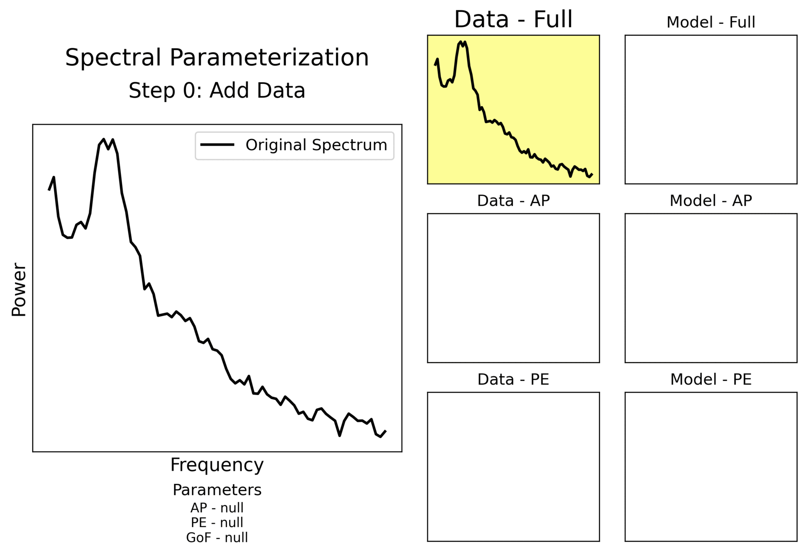

Our Research: Decoding Brain Dynamics in Epilepsy
Quantifying 'self-similarity' in SEEG data
High- and low-complexity dynamics inherent to SEEG time series data lend themselves to measurement of the degree of self-similarity (or scale-invariance) within these signals.
This property defines relationships emergin at different scales (e.g over shorter or longer time windows), used to define the trajectory of a dynamical system (like the brain) in 'phase space'.
We seek to investigate multifractal features across epileptiform states and neuroanatomical structures in SEEG data.
Visual Summary
Fractal Tree.
Quantifiying 'frequency-coupling' in SEEG data
Frequency-coupling has been well-established as a signal biomarker in scalp and subdural grid arrays. In particular, phase-amplitude coupling (PAC) refers to a type of cross-frequency coupling between low-frequency phase and high-frequency amplitudes in biomedical signals.
In SEEG data, PAC affords the opportunity to measure local coupling at each SEEG contact, as well as more diffuse coupling across SEEG-sampled networks.
We hypothesize that PAC-based dynectome profiles will differentiate potentially epileptogenic and healthy networks.
Visual Summary
Islam et alQuantifying 'unpredictablity' in SEEG data
Stochasticity, also referred to as 'randomness', can be measured in complex dynamical systems using one-over-frequency (1/fγ) analysis.
Epileptiform SEEG recordings may be quantified by defining the aperiodic exponent (γ) in the inverse relationship between a signal's power spectral density and its frequency (f) distribution.
Our work aims to assess aperiodic spectral features, while defining stochasticity, as another biomarker identifying epileptogenic networks.
Visual Summary
Donoghue et al.{kind=link}
